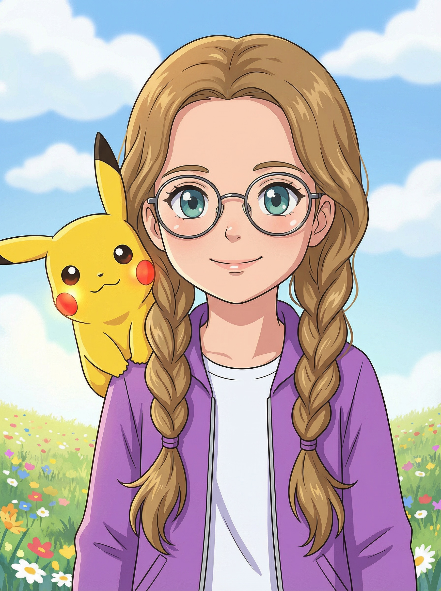
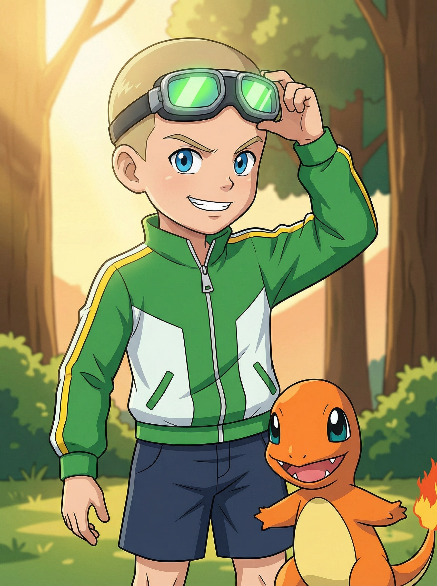
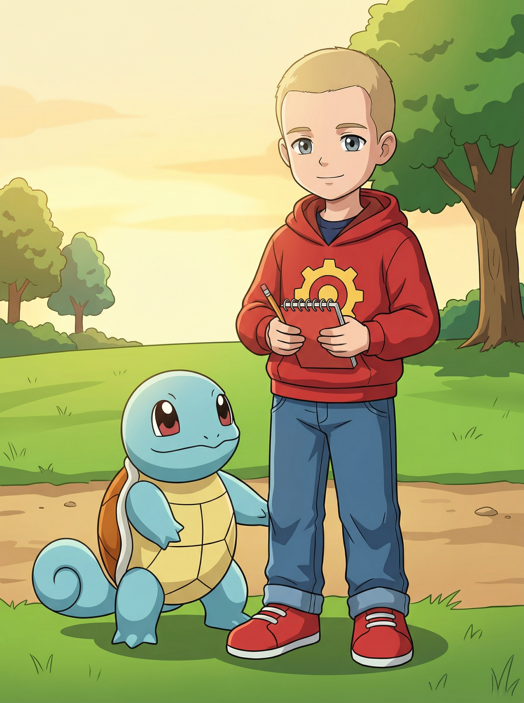

Наши герои

Кристи
Сердце группы
Девочка со светло-каштановыми косичками и круглыми очками в тонкой оправе. Носит фиолетовую куртку с покеболом. Знает о покемонах больше всех — и мечтает заполнить весь Покедекс.
Покемоны: Пикачу, Иви, Сикстейлс
Коронная фраза: «Спокойно. Я знаю, что делать.»

Макстер
Огонь группы
Худощавый мальчик со светлыми волосами и зелёными гоглами на лбу. Всегда действует первым, думает потом. Никогда не сдаётся — даже после поражений.
Покемоны: Чармандер, Пиджеотто
Коронная фраза: «Огонь!»

Ромус
Ум группы
Спокойный мальчик в красной худи с шестерёнкой. Всегда замечает закономерности и находит решения там, где другие видят тупик. Записывает всё в блокнот.
Покемоны: Сквиртл, Бульбазавр
Коронная фраза: «Подожди. Тут есть закономерность.»